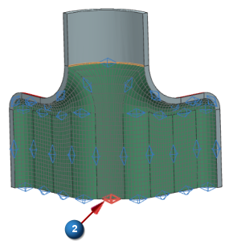

Create a mapped mesh, 3
The 2D Mapped Mesh dialog box is still open from the previous step.
Continue meshing the inside of the part. This set of surfaces connects the last two meshes. The mesh controls created for those meshes will control the number and distribution of elements in this mesh. After you create this mesh, you will modify two new mesh controls to set the number of elements for the middle face of this group.
-

 highlighted faces (7 faces total)
highlighted faces (7 faces total)

-
OK
There are too many elements in the center section of the mesh. Modify two mesh controls to force the center section to have 12 elements across.
-
Double-click the first mesh control to open the Mesh Control dialog box.


-
Click the second mesh control to set it to the same value as the first.


-
Number on Edge
Number of Elements
12

-
OK
In order to see the changes made by the mesh control change, you need to update the model.
 Update (Context group)
Update (Context group)

The mesh density of the center section more closely matches the density of the rest of the faces.